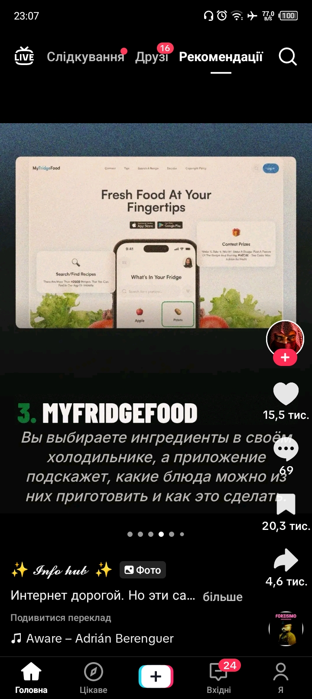
Food
MyFridgeFood is an application designed to help users discover recipes based on the ingredients they currently have in their fridge. Users input their available food items, and the app suggests various dishes that can be prepared, along with instructions. It aims to make meal planning and cooking more convenient by utilizing existing ingredients.
recipecookingfoodingredientsmeal planningkitchenfresh foodapp
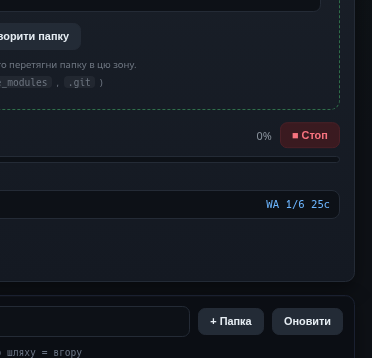
Apps
This application provides an interface for managing files and folders, likely within a software development project context, indicated by references to `.git` and `node_modules`. Users can create new folders, drag and drop existing ones into a designated zone, and monitor the progress of ongoing operations with options to stop or refresh the view. It serves as a utility for organizing and interacting with project directories.
file managementproject managementfolder operationsdevelopment toolsgitnode_modulesdrag and dropprogress monitoring
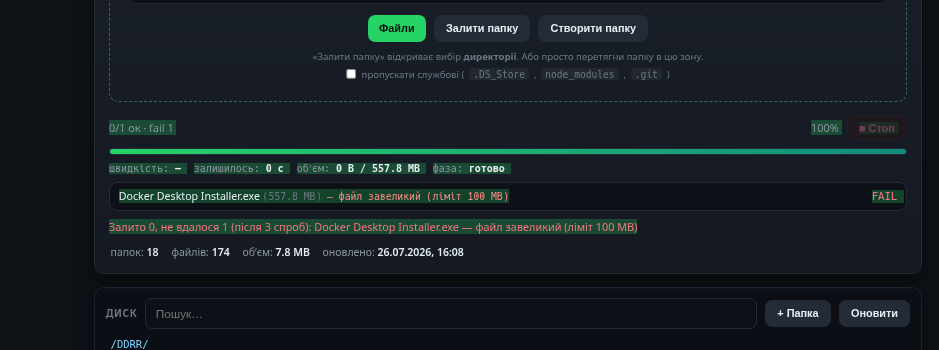
Apps
This application provides a user interface for uploading files and folders, supporting drag-and-drop functionality and options to skip specific system files during transfer. It displays detailed upload progress, including speed, remaining time, and file size, and handles errors such as exceeding file size limits. The interface also offers basic disk and folder management capabilities, showing a summary of items and their update status.
file uploadfolder managementdrag and dropprogress barerror handlingdisk utilityfile transferUkrainian UI
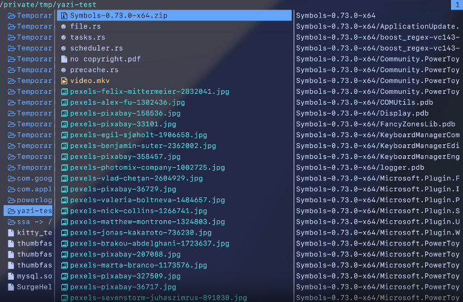
Apps
This screenshot displays a terminal-based file manager, likely Yazi, showing a directory listing on the left panel. It presents various file types including archives, source code, documents, videos, and images. The right panel appears to show details or contents related to a selected item, possibly an archive, indicating components like "Symbols" and "PowerToy".
file managerterminalCLIfile browserutilityproductivitydirectory
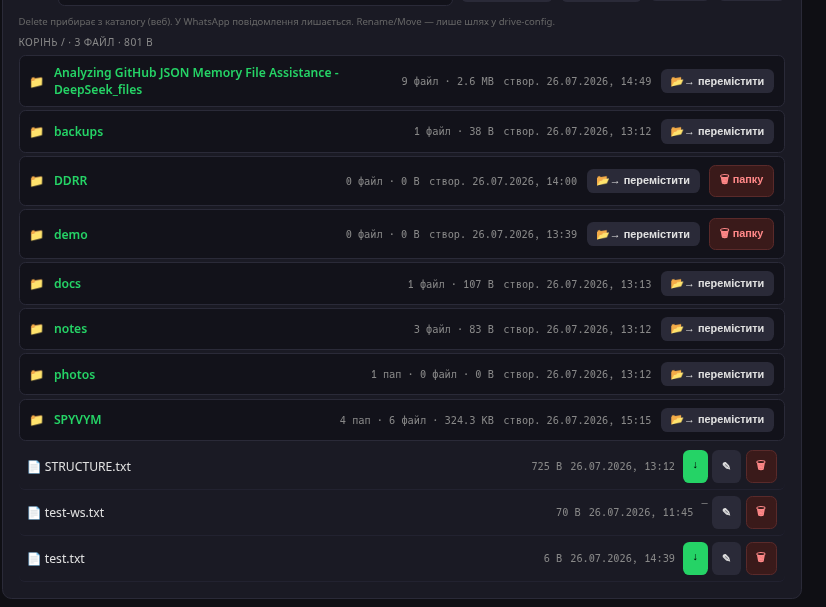
Apps
This screenshot displays a file management interface for a software project named "Analyzing GitHub JSON Memory File Assistance - DeepSeek_files". It shows a directory structure with various folders such as backups, documentation, notes, and a demo, alongside several text files. The project likely involves analyzing JSON memory files, possibly sourced from GitHub, and organizing related project assets.
GitHubJSONmemory analysisfile managementproject filesdocumentationbackupsDeepSeek
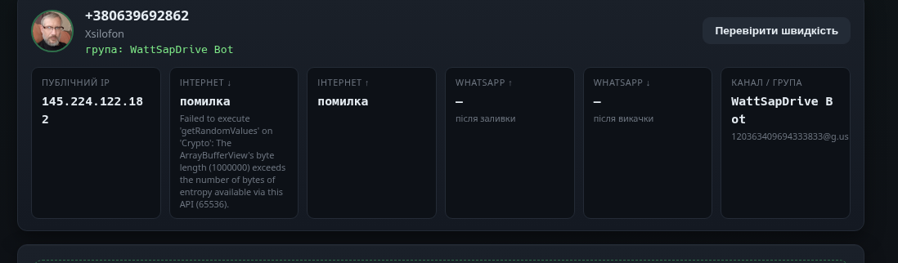
Social
This application displays the operational status of a bot named "WattSapDrive Bot," likely integrated with WhatsApp. It provides network details such as a public IP address and internet connectivity status, along with indicators for WhatsApp-related activities like uploads and downloads. The interface also shows error messages, including one related to cryptographic function execution.
WhatsApp botnetwork statusIP addresscommunicationutilitymessagingautomation
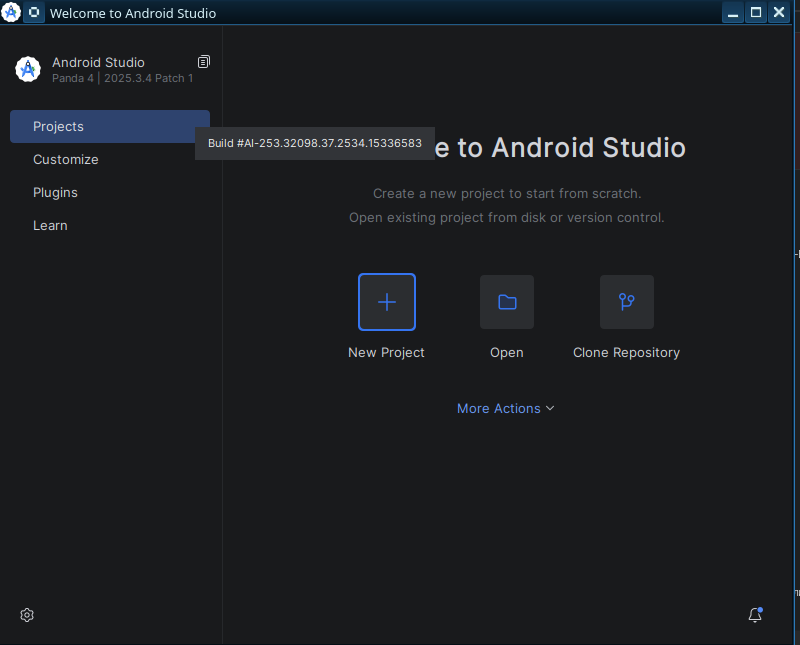
Business
Android Studio is the official integrated development environment (IDE) for Google's Android operating system. It provides tools for developers to create, test, and debug Android applications. Users can start new projects from scratch, open existing ones, or clone repositories to begin their development work.
AndroidIDEmobile developmentapp developmentprogrammingsoftwarecodingdeveloper tools
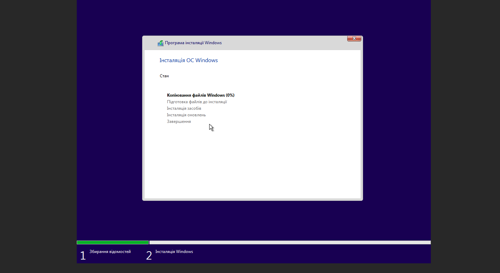
System Utility
This screenshot displays the user interface for the Windows operating system installation process. It shows the current status as "Copying Windows files (0%)" and lists the upcoming stages, which include preparing files, installing features, installing updates, and completing the installation. The bottom progress bar indicates the process is in the "Windows Installation" phase.
WindowsOS installationsystem setupinstalleroperating systemfile copyingprogressutility
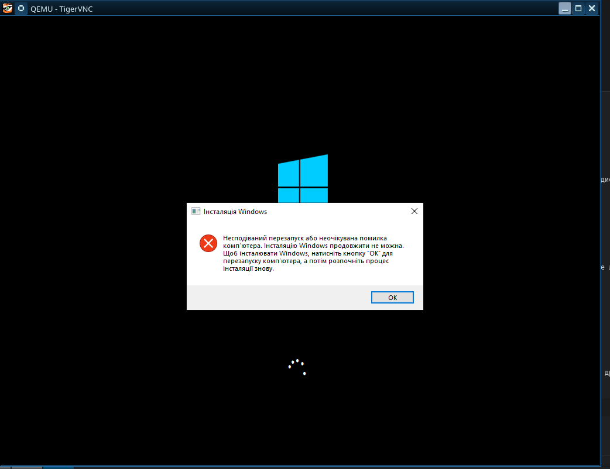
System
This screenshot shows a virtual machine environment, specifically QEMU, being accessed through a TigerVNC client. The display within the virtual machine indicates a Windows installation process that has encountered an unexpected error. The user is prompted to restart the computer to proceed with the installation.
QEMUTigerVNCvirtualizationVNCremote desktopWindows installationerrorvirtual machine
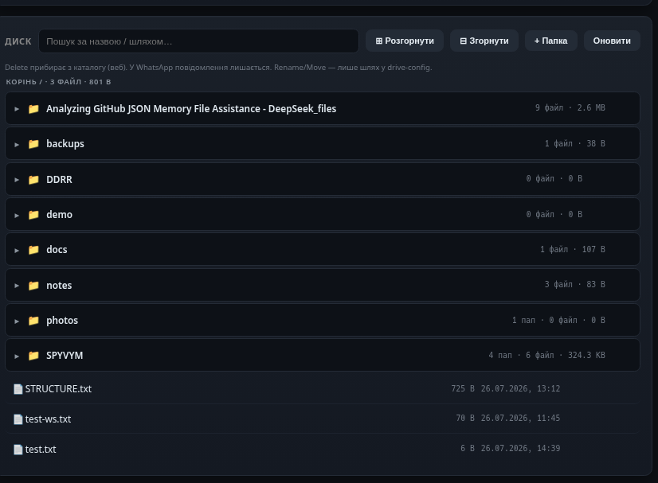
Utilities
This application presents a file management interface, allowing users to browse and organize files and folders. It displays file sizes, modification dates, and includes search functionality for efficient navigation. The tool appears designed for managing digital content, potentially for project-specific files or general disk storage.
file managerfile browserdisk managementdata organizationsearchfoldersfilesstorage
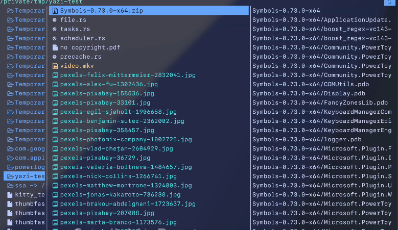
Apps
This screenshot showcases Yazi, a modern terminal file manager, displaying the contents of a directory. It presents a dual-pane interface, with the left pane listing various files and folders, including a zip archive, source code, and numerous images. The right pane appears to provide additional information or a detailed view related to the selected item, possibly debugging symbols for a software package.
file managerterminalCLInavigationfilesdirectoriesutilityYazi
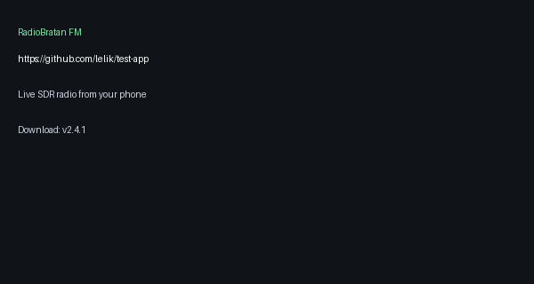
Радіо
Це екран з описом програми для отримання радіо через SDR на телефоні. Програма доступна для завантаження, версія 2.4.1. На екрані також вказано посилання на GitHub.
радіоSDRтелефонзавантаженняGitHubRadioBratanFM